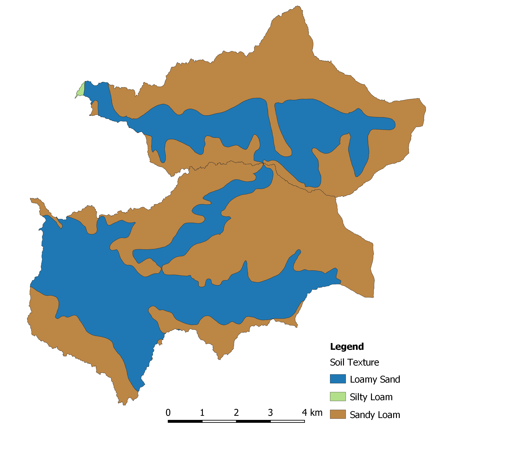

Methods for Calculating RUSLE Factors
Here, we explain how to calculate the factors required as inputs to the RUSLE for soil erosion modelling in a topographically complex area.
For each RUSLE factor (R, LS, K, C), we outline the input data required to calculate the factor and how it is calculated. Note: The P factor is not included in this analysis.
This application of the RUSLE uses data for the Trozzo and Winlaw Creek watersheds which are located in the West Kootenay region of southeastern British Columbia (Figure 1).
Figure 1 The Study area in the West Kootenay region of southeastern British Columbia, showing the two watersheds in the study area: Winlaw watershed (~41km^2), and the Trozzo Creek Watershed (~28km^2). Streams in the study area are shown in blue and the inset map situates the study area in the province of British Columbia.
RStudio Preparation:
Required R Packages:
The method for applying the RUSLE is entirely open source and is integrated within the geospatial R ecosystem (i.e. raster/terra/stars and sp/sf). This guide has been written to help both the RUSLE novice, as well as the seasoned geospatial analyst. Key packages used in this demonstration are:
library(magrittr)
library(kableExtra)
library(rgeos)
library(raster)
library(sf)
library(whitebox)
library(sp)
library(leaflet)
library(magrittr)
library(kableExtra)
library(readxl)Factor 1 - Rainfall Erosivity (R)
Input Data:
Data for the R factor is sourced from the Rainfall erosivity dataset (2017). The provided R-factor map at resolutions of 30 arc-sec (~1 km at the Equator). This data offers complete global rainfall erosivity data based on 3625 precipitation stations and around 60,000 years of rainfall records at high temporal resolution (1 to 60 minutes). Rainfall erosivity values (MJ mm ha-1 h-1 yr-1) for the study area range between 483.7963 and 622.4443 MJ mm ha-1 h-1 yr-1. These values are consistent with those reported for British Columbia. For example, according to a report by Agriculture and Agri-Food Canada, R values in Vancouver, B.C. are approximately 378 MJ mm ha-1 h-1. Marginally lower R values in the study area are explained by the geographic location of the study area, being inland from the west coast temperate zone.
Calculating the R Factor:
For application with the RUSLE, the Rainfall erosivity dataset (2017) is clipped to the study area and saved to file (Figure 2):
R_factor <- raster("data/4/R/R_factor.tif", res = 1)
R_factor <- crop(R_factor, crop_extent)Figure 2: Rainfall factor (R) values, measured in MJ mm ha-1 h-1 yr-1, for the Winlaw and Trozzo Creek watersheds. The highest R values (max = 622) in the study area are located in the southwest, and the lowest values (min = 484) are located in the northeast. Data sourced from the Rainfall erosivity dataset (2017).
Factor 2 - Slope Length (LS)
In this study, the LS factor is calculated based Desmet and Gover., 1996. Following Desmet and Gover., 1996 several sub-factors are calculated and used to inform the production of a final LS raster surface.
Input Data:
The only required input for calculating the LS factor is a Digital elevation model (DEM). Here, we test the method using a 1m resolution DEM derived from LiDAR data (Figure 3a) and a 25m resolution DEM (Figure 3b).
dem <- raster("DTM/dem.tif")
Figure 3a: Digital Elevation Model (DEM) in meters (m), for the Winlaw and Trozzo Creek watersheds. The maximum elevation in the study area is 1,816 m and the minimum is 678 m. The DEM resolution is 1m.
Figure 3b: Digital Elevation Model (DEM) in meters (m), for the Winlaw and Trozzo Creek watersheds. The maximum elevation in the study area is 1,816 m and the minimum is 678 m. The DEM resolution is 25m.
Calculating the LS Factor:
Calculating the LS factor involves nine steps:
Step 1: Slope Raster
The first step in calumniating the LS factor is the production of twp slope raster’s using the 1m DEM and 25m DEM (see Figure 4a and 4b)).
### Slope - Degrees
wbt_slope(
dem = "DTM/dem.tif",
output = "SLOPE/slope_degrees.tif",
zfactor = NULL,
units = "degrees")
slope_degrees <- raster("SLOPE/slope_degrees.tif")
Figure 4a: Slope raster in degrees, for the Winlaw and Trozzo Creek watersheds. The maximum slope in the study area is 90 degrees and the minimum is 0 degrees. The DEM resolution is 1m.
Figure 4b: Slope raster in degrees, for the Winlaw and Trozzo Creek watersheds. The maximum slope in the study area is 90 degrees and the minimum is 0 degrees. The DEM resolution is 25m.
The slope is also produced in percent using the following code:
### Slope - Percent
wbt_slope(
dem = "DTM/dem.tif",
output = "SLOPE/slope_percent.tif",
zfactor = NULL,
units = "percent")
slope_percent <- raster("SLOPE/slope_percent.tif")Step 2: Beta
Next, Beta is calculated using the 1m and 25m resolution slope_degrees rasters generated in Step 1 and the formula proposed by Desmet and Gover., 1996 (Figure 5a and 5b).
θ <- slope_degrees*pi/180 # convert degrees to radians
beta = ((sin(θ))/(0.0896))/((0.56 + 3 * (sin(θ))**0.8))
Figure 5a: Beta for the Winlaw and Trozzo Creek watersheds. The maximum value in the study area is 3.14m and the minimum value is 0.02. The beta resolution is 1m.
Figure 5b: Beta for the Winlaw and Trozzo Creek watersheds. The maximum value in the study area is 2.98m and the minimum value is 0. The beta resolution is 25m.
Step 3: Ratio of Rill to Interrill Erosivity (m)
The output of Step 2, beta, is used to calculate the ration of rill to interrill erosion, called m, for each grid cell (Figure 6a and 6b).
m = (beta)/(beta + 1) plot(m)
Figure 6a: Ratio of Rill to Interrill Erosivity (m) for the Winlaw and Trozzo Creek watersheds. The maximum value in the study area is 0.76m and the minimum value is 0.02. The resolution is 1m.
Figure 6b: Ratio of Rill to Interrill Erosivity (m) for the Winlaw and Trozzo Creek watersheds. The maximum value in the study area is 0.76m and the minimum value is 0.02. The resolution is 25m.
Step 4: Aspect Raster
Next, the terrain function from the raster package and the dem (1m and 25m) are used to produce an aspect, in radians, of the study area (Figure 7a and 7b).
aspect_radians <- terrain(dem, opt='aspect', unit='radians', neighbors=8,
filename= "ASPECT/aspect_radians.tif")Figure 7a: Aspect, in radians, for the Winlaw and Trozzo Creek watersheds. The maximum aspect value in the study area is 6.28 and the minimum value is 0 . The resolution is 1m.
Figure 7b: Aspect, in radians, for the Winlaw and Trozzo Creek watersheds. The maximum aspect value in the study area is 6.28 and the minimum value is 0. The resolution is 25m.
Step 5: Contour Width Factor (X)
Using the aspect_radians raster produced in Step 4 a contour width factor, named X , is calculated based on the method proposed by Desmet and Gover., 1996 (Figure 8a and 8b).
sin <- abs(sin(aspect_radians))
cos <- abs(cos(aspect_radians))
X = abs(sin(aspect_radians)) + abs(cos(aspect_radians))
Figure 8a: Contour width factor for the Winlaw and Trozzo Creek watersheds. The maximum value in the study area is 1.41 and the minimum value is 1. The resolution is 1m.
Figure 8b: Contour width factor for the Winlaw and Trozzo Creek watersheds. The maximum value in the study area is 1.41 and the minimum value is 1. The resolution is 25m.
Step 6: Specific Contributing Area
Step 6 involves the production of a Specific Contributing Area raster using the WhiteboxTools function wbt_fd8_flow_accumulation (Figure 9a and 9b)).
wbt_fd8_flow_accumulation(
dem = "DTM/dem.tif",
output = "FD8_FLOW_ACCUMUMULATION/fd8_flow_accumulation.tif",
out_type = "specific contributing area",
exponent = 1.1,
log = FALSE
)Figure 9a: Specific contributing area (A), in pixels, for the Winlaw and Trozzo Creek watersheds. The maximum value in the study area is 358,753 pixels and the minimum value is 1 pixel. The resolution is 1m.
Figure 9a (accompanying histogram): Specific contributing area (A) for the Winlaw and Trozzo Creek watersheds. Plot showing limits set to 0 - 5000 pixels. Pixel value is 1m.
Figure 9b: Specific contributing area (A) for the Winlaw and Trozzo Creek watersheds. The maximum value in the study area is 118,414 and the minimum value is 25. The resolution is 25m.
Figure 9b (accompanying histogram): Specific contributing area (A) for the Winlaw and Trozzo Creek watersheds. Plot showing limits set to 0 - 5000 pixels. Pixel value is 25m.
The Specific Contributing Area raster is edited so that all cells with a value > 100 are replaced with 100, our flow distance threshold. The resulting raster is named A (**Figure 10a and 10b).
fd8_flow_accumulation_duplicate[fd8_flow_accumulation_duplicate > 100] <- 100
A <- fd8_flow_accumulation_duplicate
Figure 10a: Specific contributing area (A) with a 100m threshold for the Winlaw and Trozzo Creek watersheds. The maximum value in the study area is 100 and the minimum value is 1. The resolution is 1m.
Figure 10a (accompanying histogram): Specific contributing area (A) for the Winlaw and Trozzo Creek watersheds with a 100m threshold. Plot showing limits set to 0 - 100 pixels. Pixel value is 1m.
Figure 10b: Specific contributing area (A) with a 100m threshold for the Winlaw and Trozzo Creek watersheds. The maximum value in the study area is 100 and the minimum value is 25. The resolution is 25m.
Figure 10b (accompanying histogram): Specific contributing area (A) for the Winlaw and Trozzo Creek watersheds with a 100m threshold. Plot showing limits set to 0 - 100. Pixel value is 25m.
Step 7: Length (L) Raster
The length (L) component of the LS factor is calculated based on the equation proposed by Desmet and Gover., 1996 and uses the m, X, and A sub-factors (Figure 11a and 11b)).
L = (((A +(D**2))**(m+1))-(A**(m+1)))/((D**(m+2))*(x**m)*(22.13**m))
Figure 11a: Length (L) factor for the Winlaw and Trozzo Creek watersheds. The maximum value in the study area is 4.82 and the minimum value is 0.45. The resolution is 1m.
Figure 11a (accompanying histogram): Length factor (L) for the Winlaw and Trozzo Creek watersheds. Pixel value is 1m.
Figure 11b: Length (L) factor for the Winlaw and Trozzo Creek watersheds. The maximum value in the study area is 1.1 and the minimum value is 0.85. The resolution is 25m.
Figure 11a (accompanying histogram): Length factor (L) for the Winlaw and Trozzo Creek watersheds. Pixel value is 25m.
Step 8: Slope (S) Raster
The slope (S) component of the LS factor is calculated based on the equation proposed by Schmidt et al. 2019 and uses the slope_percent raster produced in Step 1 (Figure 12a and 12b).
S = (0.0005*(slope_percent**2)) + (0.1795*slope_percent) - (0.4418)
S[S < 0] <- 0
Figure 12a: Slope (S) factor for the Winlaw and Trozzo Creek watersheds. The maximum value in the study area is 36.2 and the minimum value is 0. The resolution is 1m.
Figure 12a (accompanying histogram): Slope factor (S) for the Winlaw and Trozzo Creek watersheds. Pixel value is 1m.
Figure 12b: Slope (S) factor for the Winlaw and Trozzo Creek watersheds. The maximum value in the study area is 44.26 and the minimum value is 0. The resolution is 25m.
Figure 13b (accompanying histogram): Slope factor (S) for the Winlaw and Trozzo Creek watersheds. Pixel value is 25m.
Step 9: LS Factor
The final step for calculating the LS factor is the combination of the L and S raster’s produced in Steps 7 and 9 respectively (Figure 14a and 14b)).
LS = L*S
Figure 14a: Slope Length (LS) factor for the Winlaw and Trozzo Creek watersheds. The maximum value in the study area is 85 and the minimum value is 0. The resolution is 1m.
Figure 14a (accompanying histogram): Slope Length factor (LS) for the Winlaw and Trozzo Creek watersheds. Pixel value is 1m.
Figure 14b: Slope Length (LS) factor for the Winlaw and Trozzo Creek watersheds. The maximum value in the study area is 43 and the minimum value is 0. The resolution is 25m.
Figure 14b (accompanying histogram): Slope Length factor (LS) for the Winlaw and Trozzo Creek watersheds. Pixel value is 25m
Factor 3 - Soil Erodibility (K)
Input Data:
K factor (soil erodibility) values are based on values provided by the Ontario Ministry of Agriculture, Food and Rural Affairs and soil data from the British Columbia Soil Survey. These K estimations are based on the information obtained on approximately 1600 samples collected in Southern Ontario by Ontario Institute of Pedology surveyors. Values used here follow the recommendation by Wall et al., 2002 (Figure 15). They suggest that if the organic matter content of a soil is unknown and cannot be obtained through extensive soil testing fieldwork, ‘average K’ values should be used for RUSLE modelling.

Figure 15: Soil Erodibility (K) input data for for the study area located in West Kootenay region of southeastern British Columbia. Data sourced from the Ontario Ministry of Agriculture, Food and Rural Affairs](http://www.omafra.gov.on.ca/english/engineer/facts/12-051.htm) and soil data from the British Columbia Soil Survey.
Calculating the K Factor:
The first step for calculating K values is to tidy data and determine the average K value by soil texture. There are three soil textures in the study area (according to the British Columbia Soil Survey) (Table 3).
trozzo_soils <- read_sf("data/4/K/trozzo_Soils.shp") #BC soils data
winlaw_soils <- read_sf("data/4/K/winlaw_Soils.shp") #BC soils data
trozzo_winlaw_soils <-rbind(trozzo_soils, winlaw_soils) #Combine BC soils data
K_values <- read_excel("data/4/K/K_values.xlsx") #Pre-determined K values
K_values <- subset((merge(trozzo_winlaw_soils, K_values, by = "TEXTURE_1", all.x = TRUE)), select = c(Average_K, TEXTURE_1, AREA_SQM))Table 3. Soil erodibility values (K) for study area soil textures (Loamy Sand, Silty Loam, Sandy Loam), and the percentage area of soil class per watershed.
| Watershed | Soil Texture | Average K Value | Percentage Area (%) |
|---|---|---|---|
| Trozzo Creek | Loamy Sand | 0.005 | 35.8 |
| Silty Loam | 0.017 | 0.2 | |
| Sandy Loam | 0.050 | 64.0 | |
| Winlaw Creek | Loamy Sand | 0.005 | 46.0 |
| Silty Loam | 0.017 | 0.0 | |
| Sandy Loam | 0.050 | 54.0 |
To produce a K value raster (Figure 16), an empty raster must be built using the raster package, this raster will be populated with K values and have the same resolution and extent as the R factor raster:
empty_raster <- reclassify(R_factor, cbind(0, 800, 0), right=FALSE)
K_factor <- rasterize(K_values, y, field = "Average_K",
fun = "max", background = 0.001)
empty_raster <- raster(ncol = 11689, nrow = 11737 ,
crs = crs(R_factor), resolution = res(R_factor))
extent(empty_raster) <- extent(R_factor)
K_factor <- rasterize(K_values, R_factor, field = "Average_K",
fun = "max", background = 0.001)Figure 16: Soil erodibility factor (K) values measured the percentage erodiibilty of soil textures for the Winlaw and Trozzo Creek watershed study areas. The highest K values (max = 0.050) are associated with the Silty Loam soil texture, and the lowest K values (min = 0.005) are associated with the Loamy Sand texture. Data sourced from the British Columbia Soil Survey.
Figure 16: Soil erodibility factor (K) values measured the percentage erodiibilty of soil textures for the Winlaw and Trozzo Creek watershed study areas. The highest K values (max = 0.050) are associated with the Silty Loam soil texture, and the lowest K values (min = 0.005) are associated with the Loamy Sand texture. Data sourced from the British Columbia Soil Survey.
Factor 4 - Crop/Vegetation and Management Factor
Input Data:
There are no current, or recorded soil erosion management practices being implemented in the study area. Therefore the C factor is is based on:
- Vegetation cover, specified by the Vegetation Resource Inventory(VRI) (Figure 17)) .

Figure 17 Crop/Vegetation and Management Factor (C) Vegetation Resource Inventory (VRI) data for for the study area located in West Kootenay region of southeastern British Columbia. Data sourced from the Vegetation Resource Inventory (VRI).
- Fire Burn Severity, specified by provincial Burn Severity Mapping completed using Landsat or Satellite imagery (Figure 18).
Figure 18: Crop/Vegetation and Management Factor (C) Burn Severity Mapping data for for the study area located in West Kootenay region of southeastern British Columbia. Data sourced from BC Burn Severity Mapping completed using Landsat or Satellite imagery.
- Road network, sourced from the provincial Digital Road Atlas (Figure 19)
Figure 19: Crop/Vegetation and Management Factor (C) Road data for for the study area located in West Kootenay region of southeastern British Columbia. Data sourced from BC Digital Road Atlas and bufferd to 10m.
Calculating the C Factor:
C Factor values are assigned to each Crop/Vegetation and Management input, and vary depending on the impact (Table ??).
Table 4: Crop/Vegetation and Management values (K) for the study area for Vegetation Resource Inventory (VRI) class, Burn Severity, and Road presence.
| C Factor Class | C Factor Value |
|---|---|
| Burn Severity - High | 0.20 |
| Burn Severity - Medium | 0.05 |
| Burn Severity - Low | 0.01 |
| VRI - Treed | 0.01 |
| VRI - Herb | 0.01 |
| VRI - Shrub | 0.01 |
| VRI - Rock | 0.20 |
| VRI - Exposed Land | 0.01 |
| Roads | 0.20 |
Calculating the C factor involves seven steps:
Step 1: Reclassifying VRI Data
vri_data <- st_read("data/VRI.shp")
vri_data['C_Factor'] = as.numeric()
vri_data %>%
mutate(C_Factor = case_when(
endsWith(BCLCS_LV_4, "HE") ~ as.numeric(0.01),
endsWith(BCLCS_LV_4, "TB") ~ as.numeric(0.01),
endsWith(BCLCS_LV_4, "TM") ~ as.numeric(0.01),
endsWith(BCLCS_LV_4, "SL") ~ as.numeric(0.01),
endsWith(BCLCS_LV_4, "EL") ~ as.numeric(0.01),
endsWith(BCLCS_LV_4, "TC") ~ as.numeric(0.01),
endsWith(BCLCS_LV_4, "RO") ~ as.numeric(0.2),
endsWith(BCLCS_LV_4, "ST") ~ as.numeric(0.01),
endsWith(BCLCS_LV_3, "W") ~ as.numeric(0.01)
))Step 2: Reclassifying Burn Severity Data
BurnSeverity <- st_read("data/BurnSeverity.shp")
BurnSeverity['C_Factor'] = as.numeric()
BurnSeverity %>%
mutate(C_Factor = case_when(
endsWith(BurnSev, "High") ~ as.numeric(0.2),
endsWith(BurnSev, "Low") ~ as.numeric(0.01),
endsWith(BurnSev, "Medium") ~ as.numeric(0.05)
))Step 3: Reclassifying and Buffering Road Data
roads_buff_10 <- st_buffer(roads, 10)
roads_buff_10$C_Factor <- 0.2Step 4: VRI Polygon to Raster
vri_data_spdf <- as_Spatial(vri_data)
empty_raster <-raster(res = 1, ext = extent)
crs(empty_raster) <- crs(LS_1m)
vri <- rasterize(vri_data, empty_raster, field = "C_Factor", res = 1)Step 5: Burn Severity Polygon to Raster
BurnSeverity_spdf <- as_Spatial(BurnSeverity)
empty_raster <-raster(res = 1, ext = extent)
crs(empty_raster) <- crs(LS_1m)
burn <- rasterize(BurnSeverity, empty_raster, field = "C_Factor")Step 6: Road Polygon to Raster
roads_data_spdf <- as_Spatial(roads_buff_10)
empty_raster <-raster(res = 1, ext = extent)
crs(empty_raster) <- crs(LS_1m)
roads <- rasterize(roads_buff_10, empty_raster, field = "C_Factor", res = 1)Step 7: C Factor
C_Factor_Post_Fire <- mosaic(vri, roads, fun = "max", tolerance = 0.2)
C_Factor_Pre_Fire <- mosaic(vri, roads, fun = "max", tolerance = 0.2)This project is concerned with soil erosion modeling in a region which experienced a large fire. To that end, we produce two C Factor rasters, one pre-burn (Figure 20) and one post-burn (Figure 21).
Figure 20: Pre-burn Crop/Vegetation and Management Factor (C) for the Winlaw and Trozzo Creek watershed study areas.
Figure 21: Post-burn Crop/Vegetation and Management Factor (C) for the Winlaw and Trozzo Creek watershed study areas.